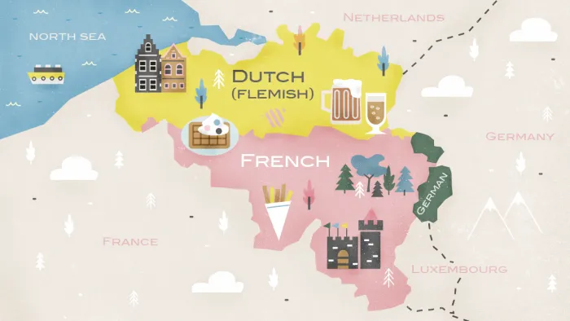
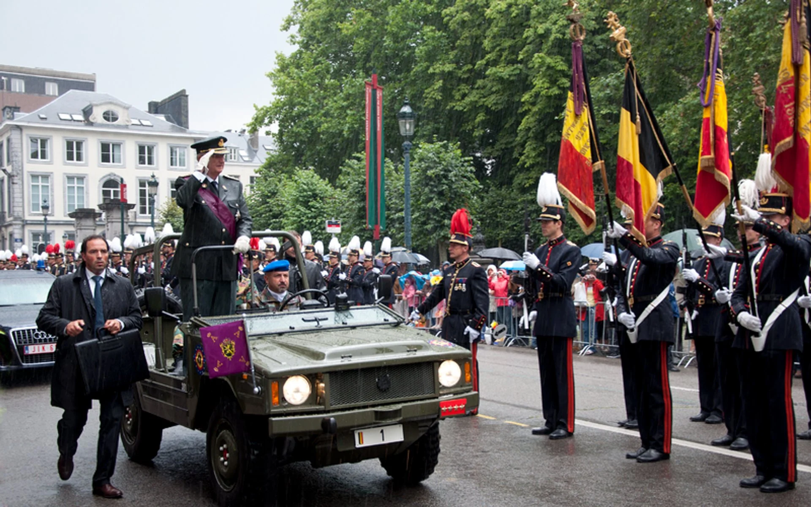
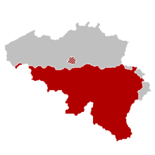
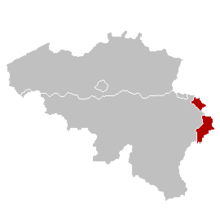

Belgium is composed of four language areas: the Dutch language area, the French language area, the German language area (9 municipalities in the east of Belgium) and the bilingual Brussels-Capital area. This subdivision into language areas and official languages does by no means detract from the language freedom.
Belgian National Day commemorates an event that occurred July 21, 1831. On that day, Leopold of Saxe-Cobourg swore allegiance to the new Belgian Constitution and became the first King of the Belgians. The king's vow marked the start of the independent state of Belgium under a constitutional monarchy and parliament.
Belgium commemorates the end of World War I every year on 11 November. The armed conflict, which began in 1914, finally ended when the Allies and Germany signed an armistice agreement on 11 November 1918 at Compiègne in northern France. Armistice Day is a public holiday in Belgium.

27 September, commemorates the victory of the patriots against the Dutch army in Brussels in 1830.
15 November, the date a decree was published to prescribe the arms, flag, colors and community day of the German-speaking area.
